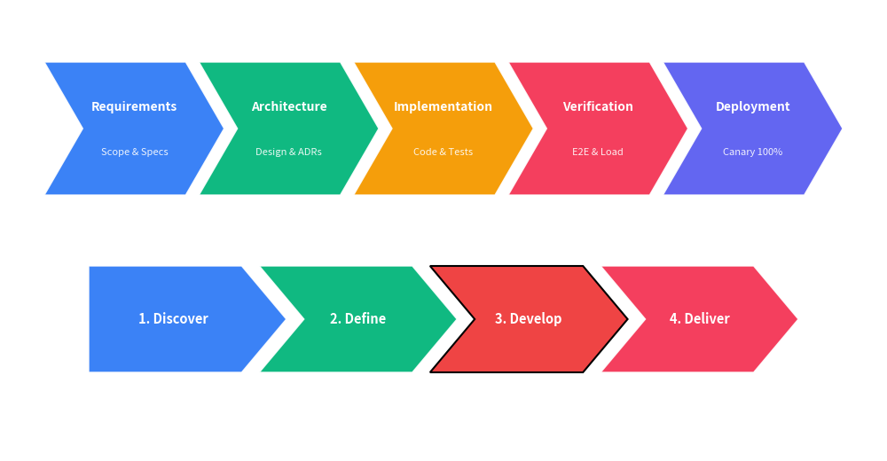

ChevronProcess
Class ChevronProcess renders sequential chevron (arrowhead block) process diagrams, ideal for pipelines, project phases, and operational procedures.
from drawlib import canvas
from drawlib._core.l3_styles import Style
from drawlib.smartarts import ChevronProcess
canvas.initialize()
# 1. Multi-phase pipeline with titles and descriptions
cp1 = ChevronProcess(spacing=1.5)
cp1.append("Requirements", description="Scope & Specs")
cp1.append("Architecture", description="Design & ADRs")
cp1.append("Implementation", description="Code & Tests")
cp1.append("Verification", description="E2E & Load")
cp1.append("Deployment", description="Canary 100%")
cp1.draw(xy=(5.0, 55.0), width=90.0, height=15.0)
# 2. Pentagonal flat-start process with custom highlight
cp2 = ChevronProcess(flat_left_end=True, corner_angle=50.0, spacing=2.0)
cp2.append("1. Discover")
cp2.append("2. Define")
cp2.append("3. Develop", style=Style(fill_color=(239, 68, 68, 1.0), line_width=1.5))
cp2.append("4. Deliver")
cp2.draw(xy=(10.0, 30.0), width=80.0, height=12.0)

1. Quick Start
Create a sequential chevron flow:
from drawlib import canvas
from drawlib.smartarts import ChevronProcess
canvas.initialize()
process = ChevronProcess(spacing=1.5)
process.append("Phase 1", description="Planning")
process.append("Phase 2", description="Execution")
process.append("Phase 3", description="Review")
process.draw(xy=(5.0, 45.0), width=90.0, height=14.0)
2. API Specification
ChevronProcess()
Initialize a ChevronProcess instance.
Args:
corner_angle(float): Angle of the arrowhead point in degrees (between 10.0 and 80.0). Defaults to60.0.spacing(float): Horizontal gap between consecutive chevrons. Defaults to1.5.flat_left_end(bool): Whether the first chevron has a flat vertical left edge instead of an indentation. Defaults toFalse.default_style(str | Style | None): Default background style for chevrons. IfNone, colors frompaletteare applied automatically.default_textstyle(str | Style | None): Default style for primary title text.default_description_style(str | Style | None): Default style for secondary description text.palette(Sequence[tuple[int, int, int]] | None): Optional sequence of colors to automatically style consecutive steps.
Methods
append(text, description="", style=None, textstyle=None, description_style=None): Append a step to the chevron process.extend(texts, descriptions=None): Append multiple steps at once.insert(index, text, description="", style=None, textstyle=None, description_style=None): Insert a step at the specified index.draw(xy, width=90.0, height=12.0, item_width=None): Draw the chevron process on the canvas starting at bottom-left coordinatexy.